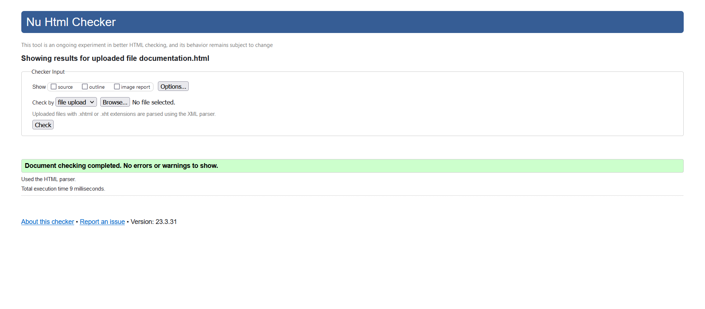
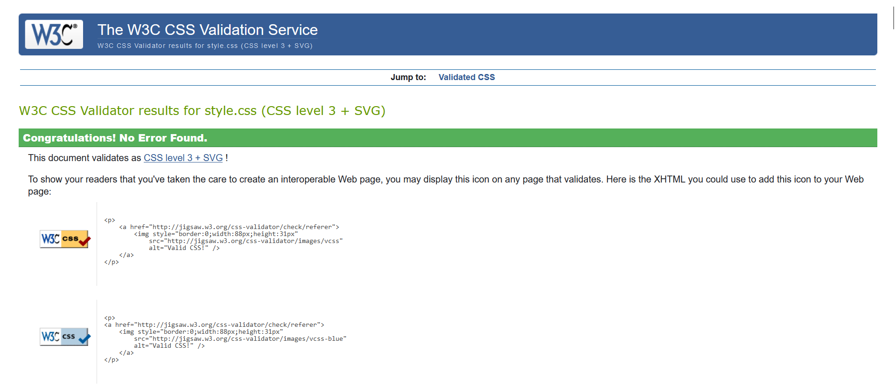

Documentation
This page contains information about All Done website.
About
All Done is a platform that serves two main purposes:
- get help with any task(s) that a user wants to get done
- provide help to someone by doing the job they posted
Instructions
- The website starts with the Home page called All Tasks that shows all posts that users have created. There, you can find a task that you want to do for someone.
- On the page Post a Task, you can fill and submit a form that describes a task that you want to get help with. Once submitted, this task will appear on All Tasks page.
- On the page Contacts, you can fill and submit a form to ask the creator a question that interests you.
List of features:
- Unique logo created specifically for the project
- Animated header background
- Transitions on the menu buttons and form buttons
- Responsive, mobile-first design
- Two forms that submit data to different tables
- Photo gallery with ideas of tasks on Post a Task page
- Information submitted on one page (Post a Task) is shown on a different one (All Tasks)
- Dynamic content of All Tasks page
- Two types of form validation
- Links to email and phone adresses lead to corresponding channels
Validation
Validation of Documentation HTML page
Validation of style CSS page
References
Background image
Photo by Dana Tentis from Pexels. Retrieved from: https://www.pexels.com/photo/turned-on-bokeh-light-370799/
Logo maker
Canva Free logo maker. Created at: https://www.canva.com/create/logos/